Factorii de risc comportamentali
 1 / 44
1 / 44Bună ziua. Azi lucrăm pe o afirmație pe care ați auzit-o cu siguranță: un pahar de vin face bine. O auzim la masă, în familie, uneori chiar de la un medic. Nu este un exemplu construit pentru curs: afirmația circulă, are în spate studii publicate, iar datele cu care o punem față în față sunt oficiale.
Azi sunteți specialistul de sănătate publică pe care îl sună un jurnalist
 2 / 44
2 / 44Facem azi ce face un specialist de sănătate publică atunci când un jurnalist sau un primar îl întreabă dacă e adevărat: punem afirmația lângă date și vedem ce arată ele. Până la sfârșit, fiecare dintre voi scrie două lucruri: răspunsul pentru jurnalist și, în a doua parte, o intervenție pentru un comportament ales. Nu este un concurs și nu se notează nimic.
Cum lucrăm azi
![AFIRMAȚIA Cum lucrăm azi De două ori vă spuneți părerea, anonim, în Mentimeter: menti.com, cu codul afișat alături Argumentele și întrebările voastre le scrieți în Slido: slido.com, cu codul afișat alături La final recapitulăm printr-un joc de întrebări, în Kahoot: kahoot.it, cu codul jocului afișat atunci pe ecran Legăturile sunt și în mesajul ședinței și în conversația ședinței. Nu aveți nevoie de nimic tipărit. Azi învățăm trei termeni noi: factorul de risc comportamental, decesul atribuibil și grupul de comparație. Mentimeter Slido slido.com · 3610451 menti.com · 2711 5113](diapozitive/C08/003.jpg) 3 / 44
3 / 44Lucrați de pe telefon sau din a doua fereastră a calculatorului. Legăturile și codurile le aveți pe ecran, în mesajul ședinței și în conversația ședinței; le lipim din nou la fiecare activitate. Vă spuneți părerea de două ori, anonim, și scrieți argumente. La întrebările de părere nicio variantă nu e greșită. Aveți azi trei termeni noi; restul vocabularului îl spunem în cuvinte obișnuite, pe măsură ce apare.
Afirmația are în spate studii reale
![AFIRMAȚIA Afirmația are în spate studii reale În 1992, un articol din revista The Lancet a descris „paradoxul francez”: francezii mâncau multe grăsimi saturate, dar mureau mai rar de boală coronariană. Boala coronariană este boala vaselor de sânge care hrănesc inima. Autorii articolului puneau o parte din explicație pe seama vinului. mai des mai rar nu beau deloc beau puțin beau mult În anii următori, multe studii au desenat o curbă în formă de J. Cei care beau puțin păreau să moară mai rar decât cei care nu beau deloc, iar cei care beau mult, mai des decât toți. Sunt studii observaționale: cercetătorii au comparat oameni care au ales singuri cât beau. Nimeni nu i-a împărțit la întâmplare în băutori și nebăutori.](diapozitive/C08/004.jpg) 4 / 44
4 / 44Afirmația nu a apărut din senin. În 1992, doi cercetători francezi au publicat în The Lancet un articol despre ceea ce au numit paradoxul francez. Articolul spunea că un consum de 20–30 de grame de alcool pe zi ar putea reduce riscul de boală coronariană cu cel puțin 40%. De aici ideea a ajuns în ziare și la mesele oamenilor. În anii următori, multe studii au desenat același tablou: pe grafic, linia riscului coboară puțin la consum mic și apoi urcă. Rețineți două lucruri. Afirmația are în spate studii reale, deci nu o putem respinge ridicând din umeri. Și toate aceste studii au comparat oameni care au ales singuri cum trăiesc.
Înainte de date: care este părerea voastră?
 5 / 44
5 / 44Înainte de orice cifră, părerea voastră. Alegeți, anonim, una dintre cele cinci poziții. Este o întrebare de opinie: nicio variantă nu e greșită și nu se notează. Distribuția părerilor o vedem o singură dată, împreună.
Care este cel mai bun argument al vostru?
 6 / 44
6 / 44Acum argumentul. Scrieți în Slido, într-o propoziție, cel mai bun argument pe care îl cunoașteți pentru poziția voastră și de unde îl știți. Citim câteva împreună și le ținem minte: pe fiecare îl vom pune, pe rând, lângă date.
29%
 7 / 44
7 / 44Ca să judecăm argumentele voastre avem nevoie de câteva unelte. Prima este chiar noțiunea din titlu. Un factor de risc comportamental este ceva ce oamenii fac în mod repetat, care le crește riscul de boală și care poate fi schimbat. Programa cursului adaugă la cele patru din profil drogurile, stresul și somnul, folosirea problematică a ecranelor, comportamentele sexuale cu risc și automedicația. De ce se ocupă sănătatea publică de ele? Pentru că greutatea lor este mare: potrivit profilului de țară, circa 29% din decesele din România din 2021. Un comportament este ceva ce face omul, dar condițiile în care îl face nu și le alege singur.
decesul atribuibil
![UNELTELE: TREI TERMENI NOI Al doilea termen: decesul atribuibil Este un deces care, potrivit calculului, nu s-ar fi produs în acel an dacă populația nu ar fi fost expusă la factorul de risc. Este o estimare pentru o populație întreagă, nu o constatare despre un om anume. Pe niciun certificat de deces nu scrie „fumat”. De aceea spunem „atribuibil”, niciodată „cauzat”. Un om care a fumat, a băut mult și a mâncat sărat moare de infarct. Decesul lui intră în socoteala fiecăruia dintre cei trei factori, așa că procentele factorilor nu se adună.](diapozitive/C08/008.jpg) 8 / 44
8 / 44Ați observat formularea: decese puse pe seama unui factor. Termenul tehnic este atribuibile și îl veți întâlni în orice raport. Este o estimare făcută pentru o populație. Atribuirile se suprapun între factori: același deces intră, cu câte o parte, în socoteala mai multora. De aceea nu adunăm niciodată procentele mai multor factori ca să aflăm cât din mortalitate ține de stilul de viață.
8,8%
![UNELTELE: TREI TERMENI NOI Câte decese din România sunt puse pe seama alcoolului? Două estimări serioase Organizația Mondială a Sănătății: 8,8% din toate decesele, în anul 2019. Studiul Povara globală a bolilor: 4,8% din toate decesele, în anul 2023, pentru factorul numit „consum ridicat de alcool”. Cifrele vin de la instituții diferite, cu metode diferite, pentru ani diferiți. Diferența nu arată o scădere în timp, iar cele două cifre nu se pun pe același grafic. Regula: de fiecare dată spunem sursa, anul și cine a calculat.](diapozitive/C08/009.jpg) 9 / 44
9 / 44Cifra depinde de cine o calculează, cum și pentru ce an. Pentru alcool în România avem două estimări serioase, care par să se contrazică. Organizația Mondială a Sănătății arată că, în 2019, alcoolul a fost răspunzător de 8,8% din toate decesele din România; la bărbați, de 13,0%, iar la femei, de 4,2%. Studiul Povara globală a bolilor estimează pentru 2023 o proporție de 4,8%. Care este cifra adevărată? Amândouă pot fi corecte, fiecare în calculul ei. Un specialist nu alege cifra care îi convine; spune de fiecare dată din ce sursă vine, pentru ce an și cine a calculat-o.
cine a fost comparat cu cine?
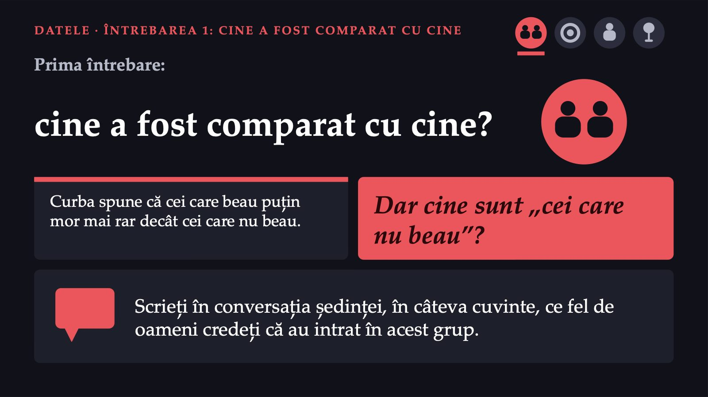
10 / 44Ne întoarcem la curba în formă de J. Ea spune că oamenii care beau puțin mor mai rar decât cei care nu beau. Întrebarea pe care o pune orice specialist este: cine sunt cei care nu beau? Scrieți în conversația ședinței ce fel de oameni credeți că au intrat în acest grup.
grupul de comparație
![DATELE · ÎNTREBAREA 1: CINE A FOST COMPARAT CU CINE Al treilea termen: grupul de comparație Este grupul de oameni față de care un studiu măsoară riscul. În multe studii vechi, grupul celor care nu beau, numiți „abstinenți”, îi cuprindea și pe foștii băutori. Mulți dintre ei renunțaseră la alcool tocmai pentru că se îmbolnăviseră. Cei care beau puțin sunt, în medie, mai sănătoși și în alte privințe, de pildă Igiena dentară Mișcarea Alimentația Greutatea Venitul Paharul de vin poate fi semnul unei vieți ordonate, nu cauza sănătății.](diapozitive/C08/011.jpg) 11 / 44
11 / 44Ce tocmai ați căutat se numește grupul de comparație. O afirmație de felul „cei care fac un lucru se îmbolnăvesc mai rar” este întotdeauna o comparație, iar valoarea ei depinde de cât de asemănători sunt, în rest, oamenii din cele două grupuri. Dacă îi punem pe foștii băutori, mulți dintre ei bolnavi, printre cei care nu beau, grupul acesta pare mai bolnav decât este, iar cei care beau puțin par, prin comparație, mai sănătoși.
87
![DATELE · ÎNTREBAREA 1: CINE A FOST COMPARAT CU CINE Ipoteza a fost verificată: o analiză din 2016 Analiza a pus laolaltă rezultatele a 87 de studii. Riscul relativ compară riscul de deces din două grupuri. Valoarea unu înseamnă același risc; o valoare sub unu înseamnă un risc mai mic. același risc Fără nicio corecție După ce s-a corectat 0,86 0,97 1 Fără nicio corecție, cei care beau puțin aveau, față de abstinenți, un risc relativ de 0,86, adică un risc aparent mai mic. După ce s-a corectat grupul abstinenților și s-a ținut seama de calitatea studiilor, valoarea a devenit 0,97. Diferența nu s-a mai putut deosebi statistic.](diapozitive/C08/012.jpg) 12 / 44
12 / 44Ipoteza a fost verificată. O analiză din 2016 a reunit 87 de studii. Fără nicio corecție, cei care beau puțin păreau să aibă un risc de deces mai mic. După ce autorii au corectat felul în care fusese alcătuit grupul abstinenților, riscul nu s-a mai putut deosebi statistic de cel al abstinenților. Cu cât valoarea este mai aproape de unu, cu atât diferența este mai mică. Analiza aceasta am citit-o numai în rezumat și o spunem deschis.
107
![DATELE · ÎNTREBAREA 1: CINE A FOST COMPARAT CU CINE O analiză mai nouă, din 2023, publicată în revista JAMA Network Open A reunit 107 studii care au urmărit grupuri mari de oameni, cu peste 4,8 milioane de participanți. După corecții, cei care beau puțin nu au avut un risc de deces semnificativ mai mic decât cei care nu au băut niciodată. „Semnificativ” înseamnă aici că diferența este greu de pus pe seama întâmplării. Riscul de deces a fost însă semnificativ mai mare la femeile care beau 25 de grame de alcool sau mai mult pe zi și la bărbații care beau 45 de grame sau mai mult.](diapozitive/C08/013.jpg) 13 / 44
13 / 44Analiza cea mai recentă citită integral este din 2023. După corecții, cei care beau puțin, adică sub 25 de grame de alcool pe zi, nu au avut un risc de deces semnificativ mai mic decât cei care nu au băut niciodată: riscul lor relativ a fost de 0,93, o diferență pe care autorii nu o socotesc semnificativă statistic. Riscul a fost însă semnificativ mai mare la consum ridicat, iar la femei pragul a fost mai jos decât la bărbați.
Prima concluzie
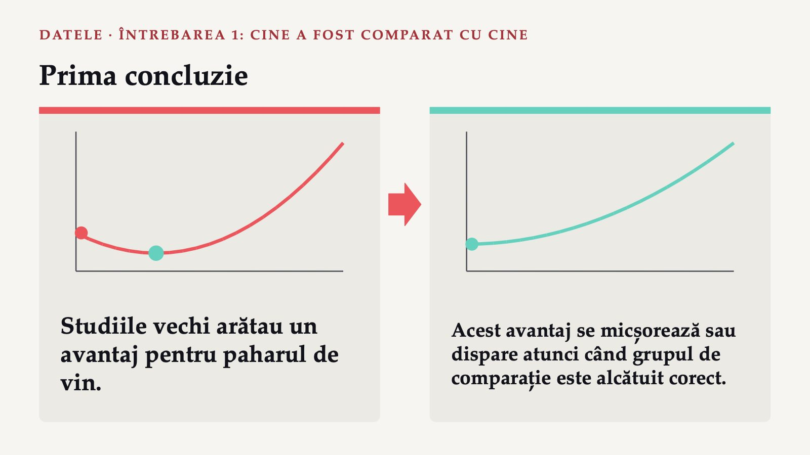
14 / 44Prima concluzie, deci: avantajul din studiile vechi se micșorează sau dispare atunci când grupul de comparație este alcătuit corect. Cine a scris la început un argument de felul „am citit că cei care beau puțin trăiesc mai mult” are acum prima întrebare de pus: mai mult decât cine?
Documentul: un comunicat al Organizației Mondiale a Sănătății, din ianuarie 2023
![DATELE · ÎNTREBAREA 2: CE REZULTAT S-A MĂSURAT Documentul: un comunicat al Organizației Mondiale a Sănătății, din ianuarie 2023 L-a publicat Biroul Regional pentru Europa al organizației. Titlul spune că niciun nivel de consum de alcool nu este sigur pentru sănătate. Alcoolul face parte din grupa substanțelor despre care se știe sigur că produc cancer la om, alături de azbest, radiații și tutun. Dovezile de acum nu arată un prag, adică o cantitate atât de mică încât alcoolul să nu mai producă cancer. Nu există studii care să arate că posibilele efecte bune asupra inimii și diabetului ar fi mai mari decât riscul de cancer adus de aceleași cantități.](diapozitive/C08/015.jpg) 15 / 44
15 / 44A doua întrebare a specialistului privește rezultatul. Studiile din care a pornit afirmația se uitau la boala coronariană. Alcoolul are însă și alte efecte, iar unul bine documentat este cancerul. Comunicatul amintește că alcoolul produce cel puțin șapte tipuri de cancer, între care cancerul de intestin gros și cancerul de sân la femei. Răul îl face alcoolul însuși, nu băutura: vinul scump și berea ieftină conțin aceeași substanță.
23 000
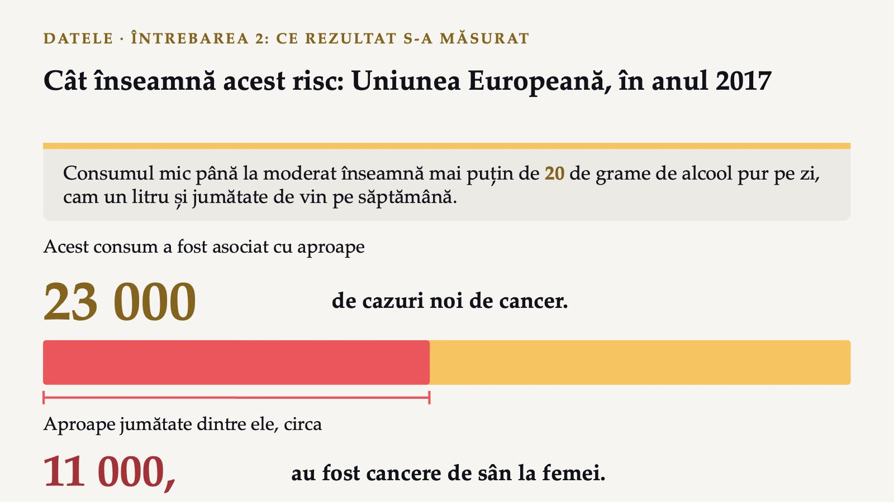
16 / 44Comunicatul se sprijină pe un articol publicat în revista The Lancet Public Health, care dă și o măsură a problemei. În Uniunea Europeană, în 2017, consumul mic până la moderat a fost asociat cu aproape 23 000 de cazuri noi de cancer, adică 13,3% din toate cancerele atribuibile alcoolului. Aproximativ jumătate din cancerele atribuibile alcoolului din Regiunea Europeană apar la oameni care nu beau mult.
A doua concluzie
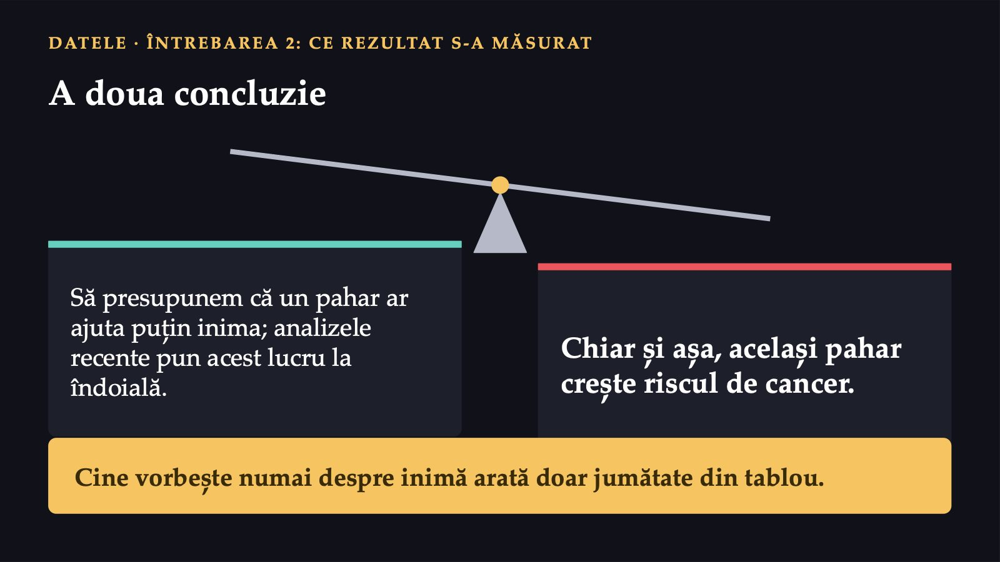
17 / 44A doua concluzie: o substanță poate ajuta un organ și poate dăuna altuia. Când auziți că ceva face bine, întrebați la ce rezultat s-a uitat studiul și ce s-a întâmplat cu celelalte rezultate importante.
A treia întrebare: la cine? Argumentul cel mai bun al celeilalte părți
![DATELE · ÎNTREBĂRILE 3 ȘI 4: LA CINE ȘI PENTRU CE CANTITATE A treia întrebare: la cine? Argumentul cel mai bun al celeilalte părți Studiul Povara globală a bolilor, publicat în 2022 pe datele anului 2020, a calculat riscul total, nu numai pe cel pentru inimă. La cei de 40 de ani și peste există un nivel mic de consum cu un risc ceva mai scăzut decât abstinența, adică decât a nu bea deloc. La cei de 15–39 de ani, acest nivel este zero sau foarte aproape de zero. Organizația Mondială a Sănătății spune că niciun nivel nu este sigur, gândindu-se mai ales la cancer. Cele două surse sunt de acord că „face bine” nu este o descriere corectă pentru un tânăr. Peste nivelul cu cel mai mic risc, riscul crește cu fiecare pahar.](diapozitive/C08/018.jpg) 18 / 44
18 / 44A treia întrebare este „la cine”. Avem datoria să prezentăm și argumentul cel mai bun al celeilalte părți, pentru că el există. La vârste la care boala de inimă este frecventă, o cantitate mică de alcool poate însemna, la nivelul populației, un risc total puțin mai mic decât abstinența. La tineri, nu: la vârsta voastră, cea mai mare parte a poverii de boală legate de alcool vine din traumatisme, adică din accidente și alte vătămări. Și tocmai tinerii sunt cei mai mulți dintre cei care beau peste nivelul cu risc: dintre oamenii care consumau cantități dăunătoare, 59,1% aveau între 15 și 39 de ani, iar 76,9% erau bărbați. Cele două surse nu spun, deci, exact același lucru, și trebuie să o arătăm.
pentru ce cantitate? Întâi, estimarea voastră
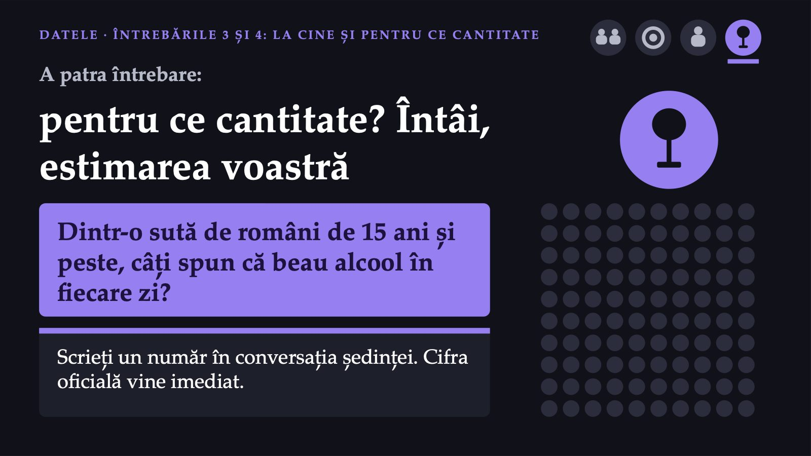
19 / 44A patra întrebare este „cât”. Afirmația vorbește despre un pahar. Înainte de cifra oficială, estimarea voastră: dintr-o sută de români de 15 ani și peste, câți spun că beau în fiecare zi? Scrieți un număr în conversația ședinței.
Cum beau românii, după ce declară ei înșiși (anul 2019)
![DATELE · ÎNTREBĂRILE 3 ȘI 4: LA CINE ȘI PENTRU CE CANTITATE Cum beau românii, după ce declară ei înșiși (anul 2019) români Uniunea Europeană Beau în fiecare zi 2,9% dintre români, față de 8,4% în Uniunea Europeană. 2,9% 8,4% Beau în fiecare săptămână 19,0% dintre români, față de 28,8% în Uniunea Europeană. 19,0% 28,8% Nu au băut niciodată sau nu au băut în ultimul an 30,5% dintre români, față de 26,2% în Uniunea Europeană. 30,5% 26,2% Beau mult la o singură ocazie, cel puțin o dată pe săptămână, 11,1% dintre români, față de 3,7% în Uniunea Europeană. 11,1% 3,7% Sursa: Eurostat, ancheta europeană de sănătate prin interviu, persoane de 15 ani și peste.](diapozitive/C08/020.jpg) 20 / 44
20 / 44Românii spun că beau mai rar decât media europeană. Aproape o treime nu au băut niciodată sau nu au băut în ultimul an. Dar atunci când beau, mulți beau mult dintr-odată: Eurostat numește acest fel de a bea consum episodic excesiv. Proporția este de trei ori mai mare decât în Uniunea Europeană, după calculul nostru. La bărbații din România ea a ajuns la 20,1%, iar la femei a fost de 2,6%. Sunt declarații date într-un interviu, iar anchetele făcute în populație subestimează consumul de alcool.
Cât alcool se bea, de fapt, în România (anul 2019)
![DATELE · ÎNTREBĂRILE 3 ȘI 4: LA CINE ȘI PENTRU CE CANTITATE Cât alcool se bea, de fapt, în România (anul 2019) Socoteala se face în litri de alcool pur pe an, adică numai alcoolul din băuturi, pentru fiecare locuitor de 15 ani și peste. În România s-au băut 17,0 litri În Regiunea Europeană 9,2 litri Iar în lume 5,5 litri În România, asta înseamnă mai mult de trei băuturi standard pe zi pentru fiecare locuitor de 15 ani și peste, cu tot cu cei care nu beau deloc (calculul nostru). Problema României nu este paharul de vin de la masă, ci cantitatea mare băută de o parte a populației, mai ales de bărbați.](diapozitive/C08/021.jpg) 21 / 44
21 / 44Viața reală vorbește despre altceva decât un pahar. Potrivit raportului global al Organizației Mondiale a Sănătății, în România consumul total a fost, în 2019, de 17,0 litri de alcool pur pe an pentru fiecare locuitor de 15 ani și peste; la bărbați, de 27,3 litri, iar la femei, de 7,5 litri. O băutură standard înseamnă 10 grame de alcool pur. O afirmație liniștitoare despre un pahar ajunge, în realitate, la urechile unor oameni care beau cu totul altfel.
După date: care este părerea voastră acum?
![PĂREREA VOASTRĂ, DUPĂ DATE După date: care este părerea voastră acum? Răspundeți în Mentimeter: menti.com, cu codul afișat alături Aceeași afirmație: „Un pahar de vin face bine.” Care este poziția voastră acum? Aveți aceleași cinci variante: De acord Mai degrabă de acord Mai degrabă împotrivă Împotrivă Nu știu Gândiți-vă la cele patru întrebări: cine a fost comparat cu cine, ce rezultat s-a măsurat, la cine și pentru ce cantitate. Nici acum nu există o poziție corectă. Contează argumentul. Mentimeter menti.com · 2711 5113](diapozitive/C08/022.jpg) 22 / 44
22 / 44Aveți în față aceeași afirmație și cele patru întrebări. Alegeți din nou, anonim, una dintre cele cinci poziții. Nici acum nu există o poziție corectă proiectată: contează argumentul.
Răspunsul vostru pentru jurnalist
23 / 44Acum partea de meserie. Un jurnalist vă întreabă dacă e adevărat că un pahar de vin face bine. Scrieți în Slido ce i-ați răspunde, în cel mult două propoziții: un lucru pe care datele îl arată și unul pe care nu îl arată. Citim câteva răspunsuri împreună.
Părerile voastre, înainte și după date
 24 / 44
24 / 44Avem cele două distribuții ale părerilor, de dinainte și de după. Nu căutăm un vot câștigător; ne interesează ce s-a mutat și ce argument a mutat. Cine și-a păstrat poziția are și el un argument, iar unele dintre ele sunt bune: de pildă, cel despre vârstă.
Cum spune același lucru Organizația Mondială a Sănătății, într-un minut
 25 / 44
25 / 44Înainte de a merge mai departe, un film scurt al Biroului Regional pentru Europa al Organizației Mondiale a Sănătății. Priviți-l cu răspunsul vostru pentru jurnalist în față și notați un lucru pe care l-ați adăuga sau pe care l-ați spune altfel.
Un răspuns posibil pentru jurnalist
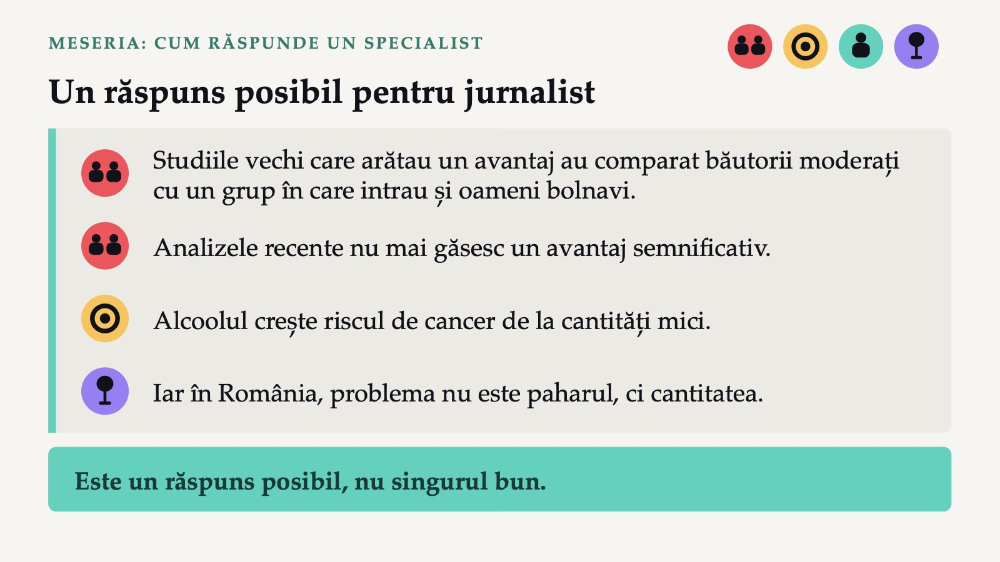
26 / 44Un răspuns pentru jurnalist ar putea suna așa. Observați că nu este un simplu „da” sau „nu”: răspunsul bun arată datele și limitele lor. Nu spunem că un pahar de vin face bine și nici că un singur pahar îmbolnăvește un om anume: datele arată riscuri la nivelul populației.
Patru întrebări pentru orice afirmație despre sănătate
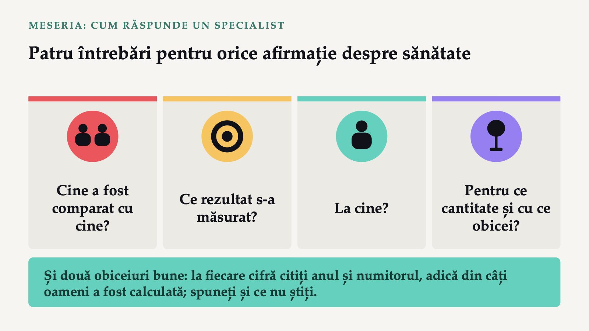
27 / 44Ce am făcut până aici este o parte obișnuită a meseriei. Specialistul de sănătate publică primește des întrebări de felul „e adevărat că…?” de la jurnaliști, de la primari, de la directori de școli. Cele patru întrebări se pot folosi pentru orice afirmație despre sănătate: ce e adevărat pentru un om de șaptezeci de ani poate să nu fie adevărat pentru unul de douăzeci.
S
![MESERIA: CUM RĂSPUNDE UN SPECIALIST Ce se poate face pentru alcool În 2018, Organizația Mondială a Sănătății a lansat inițiativa SAFER, cu cinci măsuri. Primele două sunt Restrângerea accesului la alcool Măsurile împotriva conducerii sub influența alcoolului Urmează Accesul la depistare, la intervenții scurte și la tratament Interzicerea sau limitarea publicității Creșterea prețurilor prin taxe S A F E R Cele mai multe nu se adresează omului care bea, ci condițiilor în care alcoolul se vinde și se cumpără.](diapozitive/C08/028.jpg) 28 / 44
28 / 44Dacă problema este cantitatea băută de o populație întreagă, sfatul dat fiecărui om nu ajunge. Organizația Mondială a Sănătății a lansat în 2018 o inițiativă cu cinci măsuri pe care le socotește cele mai eficiente față de costul lor. Observați că cele mai multe nu se adresează omului care bea, ci condițiilor.
17%
![MESERIA: CUM RĂSPUNDE UN SPECIALIST Ce face România: ce spun două surse oficiale Analiza de situație publicată în 2026 pe pagina Ministerului Sănătății spune: „România nu are încă o strategie integrată de combatere a consumului de alcool”. Profilul de țară din 2025 spune că România a luat un număr limitat de măsuri: Accizele, adică taxele speciale pe alcool Reglementarea publicității Interzicerea vânzării către cei sub 18 ani Același profil arată că, în 2022, 17% dintre tinerii de 15 ani trecuseră deja prin mai multe episoade de beție.](diapozitive/C08/029.jpg) 29 / 44
29 / 44Pentru România, două surse oficiale descriu situația. Analiza publicată pe pagina Ministerului Sănătății scrie că România nu are încă o strategie integrată de combatere a consumului de alcool și că un comitet național pentru politicile din domeniul alcoolului, înființat în 2015, nu a ajuns niciodată să funcționeze. Profilul de țară notează că România a luat numai un număr limitat de măsuri.
Tutunul: cine fumează?
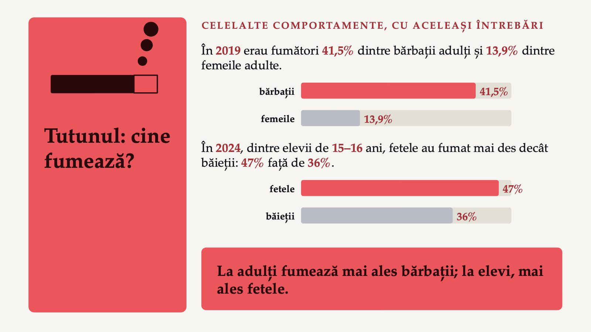
30 / 44Trecem prin celelalte comportamente din programă, cu aceleași întrebări în minte și cu câte o singură constatare pentru fiecare; restul este în note. Dintre tutun, alcool și droguri, tutunul are în România cea mai mare greutate în estimările studiului Povara globală a bolilor. La adulți fumează mai ales bărbații; la elevi, mai ales fetele. Cine pregătește o campanie pentru școli trebuie să știe acest lucru înainte de a alege mesajul și imaginile.
Produsele noi cu nicotină sunt „mai curate și mai moderne”?
![Produsele noi cu nicotină sunt „mai curate și mai moderne”? CELELALTE COMPORTAMENTE, CU ACELEAȘI ÎNTREBĂRI Aceste produse sunt țigara electronică, tutunul încălzit și pliculețele cu nicotină. În 2022, 26% dintre tinerii români de 15 ani folosiseră țigara electronică în ultima lună, iar 23% fumaseră țigări. țigara electronică 26% țigări 23% Scăderea fumatului clasic la adolescenți este compensată în parte de produsele noi. Nicotina, oricum ar fi luată, dă dependență: omul ajunge să nu se mai poată lipsi de ea.](diapozitive/C08/031.jpg) 31 / 44
31 / 44Produsele noi cu nicotină sunt țigara electronică, tutunul încălzit și pliculețele cu nicotină. Sunt promovate ca fiind mai curate și mai moderne: o afirmație care circulă, ca aceea despre paharul de vin. Datele arată întâi cât de repede s-au răspândit: mai mulți tineri de 15 ani folosesc țigara electronică decât fumează țigări. Organizația Mondială a Sănătății scrie că produsele din tutun încălzit nu îi ajută pe fumători să renunțe și că nicotina este dăunătoare mai ales pentru copii, adolescenți și tineri, al căror creier este încă în dezvoltare.
1 525
![Drogurile: ce nu știm CELELALTE COMPORTAMENTE, CU ACELEAȘI ÎNTREBĂRI Pentru România, în 2023, studiul Povara globală a bolilor estimează 1 525 de decese atribuibile consumului de droguri. 357 1 525 2 345 Intervalul de incertitudine merge de la 357 la 2 345. El arată marginile între care se află, cu mare probabilitate, valoarea adevărată. Un interval atât de larg arată că știm mult mai puțin decât despre fumat. Pentru adulții din România nu am găsit o cifră oficială recentă a consumului. Un specialist spune și ce nu știe.](diapozitive/C08/032.jpg) 32 / 44
32 / 44În estimările studiului Povara globală a bolilor, drogurile produc în România mai puține decese decât tutunul și alcoolul. Intervalul de incertitudine este însă foarte larg: oamenii ascund consumul, iar decesele sunt mai greu de pus pe seama lui. Sănătatea publică lucrează pe trei căi: prevenirea, tratamentul dependenței și reducerea riscurilor, care îi ține în viață și fără infecții pe cei care nu se pot opri acum. Unii resping această a treia cale; rețineți-o ca temă de dezbatere.
Alimentația: 10% sau 34% dintre adulți au obezitate?
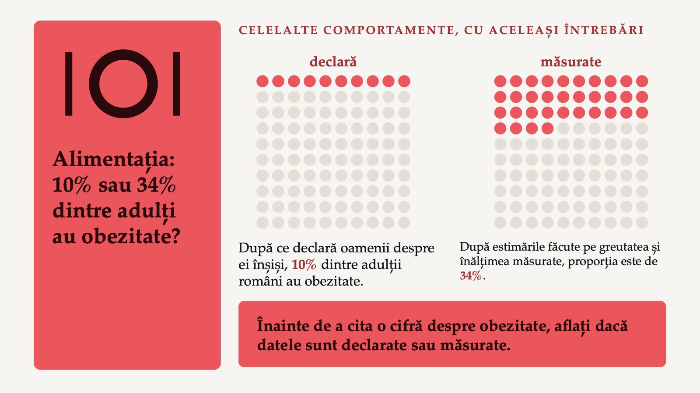
33 / 44Aici datele pentru România cer cea mai mare atenție, pentru că depind de felul în care au fost culese. Profilul de țară dă 10% adulți cu obezitate, din ce declară oamenii. Același profil adaugă, într-o notă de subsol, că estimările Organizației Mondiale a Sănătății, bazate pe greutatea și înălțimea măsurate, ajung la 34% și așază România pe primul loc din Uniunea Europeană. Nu este o diferență de rotunjire. Este diferența dintre ce spun oamenii despre ei înșiși și estimările făcute pe greutatea și înălțimea măsurate.
Mișcarea: lene sau condiții?
![Mișcarea: lene sau condiții? CELELALTE COMPORTAMENTE, CU ACELEAȘI ÎNTREBĂRI În 2019, 84,0% dintre românii de 15 ani și peste nu făceau deloc activitate fizică aerobă în afara muncii; în Uniunea Europeană, 47,3%. 84,0% 47,3% Activitatea fizică aerobă este mișcarea care face inima și respirația să lucreze mai repede, de pildă mersul alert, alergarea sau mersul pe bicicletă. Mișcarea depinde de condiții: De trotuare De parcuri De piste de biciclete De timpul pierdut în trafic De felul muncii Inactivitatea fizică și comportamentul sedentar nu sunt același lucru. Sedentar înseamnă timpul petrecut treaz, dar stând jos sau întins.](diapozitive/C08/034.jpg) 34 / 44
34 / 44Organizația Mondială a Sănătății recomandă adulților cel puțin 150 de minute de activitate fizică moderată pe săptămână. Cifrele României nu trebuie citite ca o dovadă de lene: mișcarea depinde de condiții. Și încă o deosebire: un om poate face mișcare o jumătate de oră și poate sta apoi pe scaun tot restul zilei. Inactivitatea și comportamentul sedentar sunt două lucruri diferite.
7 ore
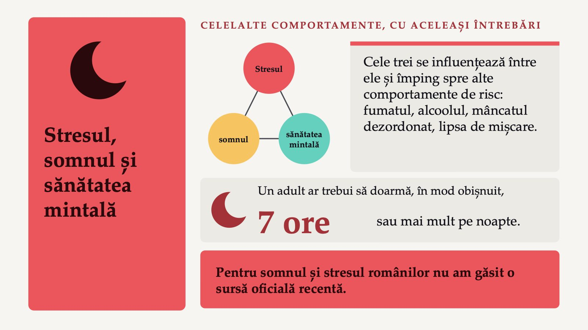
35 / 44Omul stresat doarme prost, omul care doarme prost devine mai anxios și mai trist, iar omul deprimat doarme și mai prost. Academia Americană de Medicină a Somnului spune că somnul este esențial pentru sănătate și observă că programele care promovează somnul sănătos lipsesc. Pentru România, la aceste teme, datele oficiale lipsesc, și o spunem.
Rețelele sociale: problema este pierderea controlului, nu numărul de ore
 36 / 44
36 / 44Telefonul, rețelele sociale și jocurile video nu sunt un rău în sine. Devin o problemă de sănătate atunci când folosirea lor scapă de sub control: omul nu își poate controla folosirea, se simte rău când nu are acces, lasă deoparte alte activități. România iese în evidență în studiul internațional făcut în școli. Formularea exactă este „dintre țările și regiunile studiului”, nu „din Uniunea Europeană”. Legăturile cu somnul și cu starea de bine sunt asocieri: nu arată ce este cauză și ce este urmare.
Comportamentele sexuale cu risc
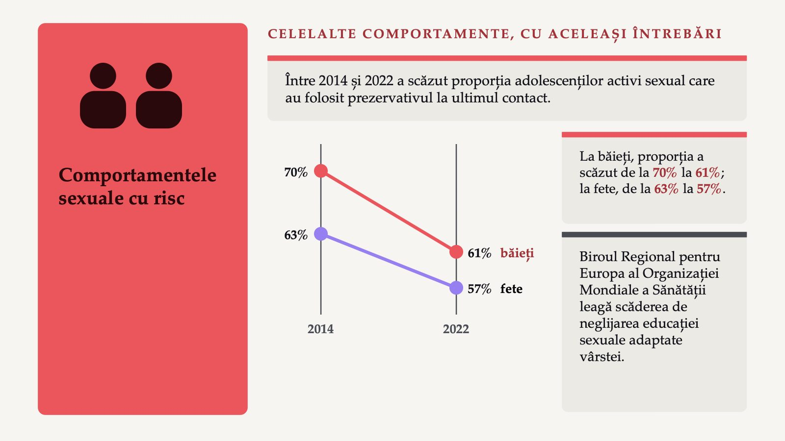
37 / 44Același studiu internațional din școli arată o schimbare care îi îngrijorează pe specialiști: folosirea prezervativului scade. Aproape o treime dintre adolescenții activi sexual nu au folosit nici prezervativ, nici pilulă contraceptivă, iar proporția este mai mare la cei din familiile cu resurse puține. Comunicatul Biroului Regional pentru Europa leagă scăderea de neglijarea educației sexuale adaptate vârstei.
Antibioticele: paguba nu este numai a celui care ia pastila
![Antibioticele: paguba nu este numai a celui care ia pastila CELELALTE COMPORTAMENTE, CU ACELEAȘI ÎNTREBĂRI Într-un sondaj din 2022, 8% dintre românii care luaseră antibiotice le cumpăraseră din farmacie fără rețetă; în Uniunea Europeană, 4%. Pentru România, sondajul are o bază mică. românii 8% Uniunea Europeană 4% Bacteriile rezistente sunt cele asupra cărora antibioticul nu mai are efect. Fiecare folosire inutilă a antibioticului le ajută să se înmulțească. Răceala este produsă de un virus, iar antibioticul nu are niciun efect asupra virusurilor.](diapozitive/C08/038.jpg) 38 / 44
38 / 44Situația o cunoașteți: un adult răcit ia antibioticul rămas în casă ca să nu se complice, se oprește când se simte mai bine și păstrează restul pentru data viitoare. A câștigat numai riscul de efecte nedorite, iar bacteriile lui, o ocazie de a deveni rezistente. Paguba o suportă toți cei care vor avea cândva o infecție greu de tratat. Procentele României din sondaj sunt calculate pe numai 217 persoane, deci trebuie luate ca ordin de mărime.
Un om care face această meserie
 39 / 44
39 / 44Înainte să scrieți intervenția voastră, un film scurt al Biroului Regional pentru Europa al Organizației Mondiale a Sănătății despre un om care lucrează în acest domeniu. Notați, în timp ce priviți, pentru cine lucrează și ce încearcă să schimbe: sunt primele două rânduri ale exercițiului care urmează.
Proiectați o intervenție
![INTERVENȚIA VOASTRĂ Proiectați o intervenție Scrieți în Slido: slido.com, cu codul afișat alături Lucrați singuri, ca un specialist dintr-o direcție de sănătate publică. Alegeți un comportament de azi și scrieți patru rânduri scurte. Pentru cine este intervenția? Numiți un grup anume, nu „populația”. Ce se schimbă în condițiile în care trăiește acel grup? De pildă un preț, o regulă, un serviciu sau un loc. Cine o poate face? De pildă primăria, școala, direcția de sănătate publică sau un minister. După ce cifră ați ști, peste un an, că intervenția a mers, și de unde ați lua cifra? Nu există o intervenție corectă dinainte. Una bună numește grupul, schimbă o condiție și are o cifră de urmărit. Slido slido.com · 3610451](diapozitive/C08/040.jpg) 40 / 44
40 / 44Acum fiecare lucrează singur, ca un specialist dintr-o direcție de sănătate publică. Aveți lista comportamentelor de azi și datele României pentru fiecare. Alegeți unul și scrieți în Slido patru rânduri scurte. Celelalte răspunsuri se văd pe ecran; discutăm două sau trei. Nu există o intervenție corectă dinainte.
De ce nu ajunge sfatul
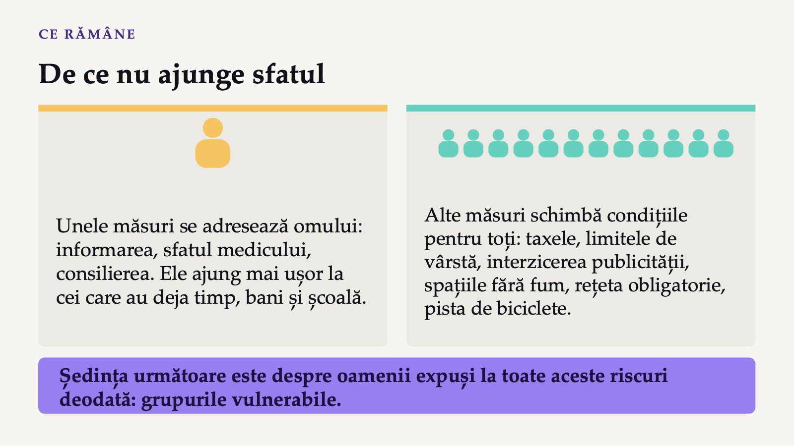
41 / 44Toate comportamentele de azi au ceva în comun. Fiecare pare o alegere personală și fiecare se dovedește legat de condiții pe care omul nu le alege: prețul alcoolului și al țigărilor, reclama de lângă școală, programul de lucru care nu lasă timp de somn, lipsa trotuarului, farmacia care dă antibioticul fără rețetă. Măsurile de al doilea fel fac alegerea sănătoasă mai ușoară pentru toți, fără să ceară cuiva un efort deosebit. Unii oameni sunt mai expuși decât alții la toate aceste riscuri deodată; despre ei este ședința următoare.
Recapitularea,
 42 / 44
42 / 44Recapitulăm ideile printr-un joc de întrebări pe telefon: ce înseamnă „atribuibil”, ce este grupul de comparație, ce deosebește datele declarate de cele măsurate, ce fel de măsură schimbă condițiile. Întrebările sunt despre idei, nu despre cifre de ținut minte, și nu se notează.
?
43 / 44La sfârșit, întrebările voastre. Scrieți în Slido, anonim, o întrebare despre ce nu a fost clar azi. Răspunsurile vin pe loc sau la ședința următoare.
Trei idei de luat acasă
![CE RĂMÂNE Trei idei de luat acasă Prima: „atribuibil” nu înseamnă „cauzat”, procentele factorilor nu se adună, iar cifra depinde de cine a calculat-o, cum și pentru ce an. A doua: o afirmație despre sănătate se verifică prin patru întrebări: cine a fost comparat cu cine, ce rezultat s-a măsurat, la cine și pentru ce cantitate. A treia: comportamentele se schimbă mai ales când se schimbă condițiile: prețul, regulile, publicitatea, serviciile. De mâine, când auziți că ceva „face bine”, întrebați: față de cine, la ce rezultat și în ce cantitate?](diapozitive/C08/044.jpg) 44 / 44
44 / 44Trei idei de luat acasă. Un factor de risc comportamental se judecă la nivelul populației. O afirmație care circulă se verifică prin patru întrebări, și spuneți și ce nu arată datele. Comportamentele se schimbă mai ales când se schimbă condițiile; sfatul singur ajunge la cei care aveau deja cele mai multe mijloace. Și când citiți o cifră despre greutatea, băutul sau fumatul românilor, aflați întâi dacă oamenii au fost întrebați sau măsurați. Vă mulțumesc.
Săgeți sau spațiu: navigare · O: vedere de ansamblu · N: notele prezentatorului · F: ecran complet · Esc: închidere